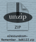
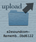
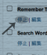
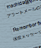

Yuya Terajima
てらじま ゆうや
- website : e2esound.com
- blog : e2esound.com業務日誌
- twitter : @terakuma
e2esound.com tools
“Remember The WordPress” は一定期間ブログが更新されなかったときにWordPress から通知が届くPlugin。
例えば、「お店のスタッフの顔が見えるホームページ」というコンセプトに従い、コンテンツの一つとして「ブログ」を設置。
ところが全くそのブログが更新されず、顔が見えるどころかこの店は閉店してしまっているのでは、とサイトの訪問者に誤解を招くような結果に ... 。
お店の店長は、「インターネットのことは若いもんに任せてるから」と、売り上げるを上げる為に作ったせっかくのホームページが逆効果を生んでいることとは露知らず。
なんてことが起きるのを防ぐために、任意の期間ブログが更新されなかったらメールで通知がくる、っていうPluginです。
まずはここから "Remember The WordPress" をダウンロード。zipファイルを解凍します。
解凍したフォルダごと、WordPressの /wp-content/Plugins/ ディレクトリにアップロード。
WordPressの管理画面、「プラグイン」から "Remember The WordPress" を有効化。
「設定」> "Remember The WP" をクリックして設定画面へ。
「アラート発生日数」、「送信先E-mailアドレス」、「メールタイトル」、「メール本文」を設定。